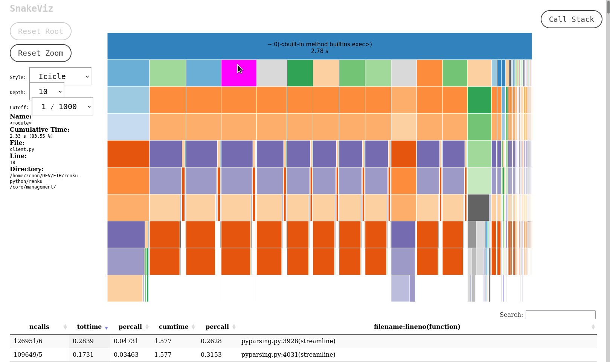
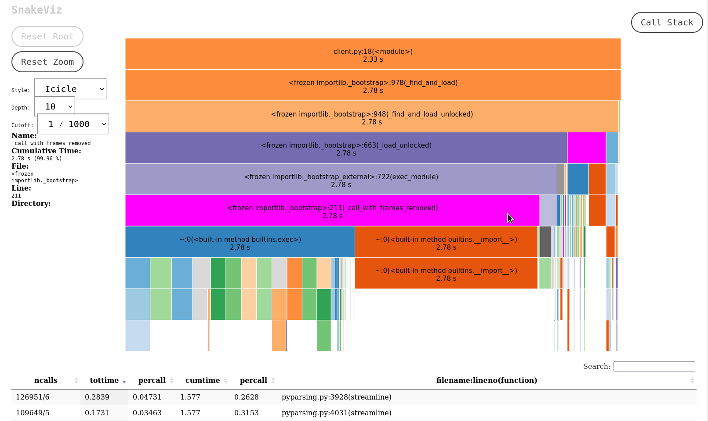

$ time python myfile.py
[...]
real 0m2.173s
user 0m2.025s
sys 0m0.143s
$ python -m myserver &
$ sudo su # needs root unfortunately
$ ps aux |grep python
user 817920 21.5 0.0 14948 9924 pts/2 R+ 18:13 0:14 /usr/bin/python -m myserver
$ py-spy record --pid 817920
py-spy> Sampling process 100 times a second. Press Control-C to exit.
^C
py-spy> Stopped sampling because Control-C pressed
py-spy> Wrote flamegraph data to '817920-2021-10-06T18:20:03+02:00.svg'. Samples: 619 Errors: 0
def fib(n):
if n < 2:
return n
return fib(n-1) + fib(n-2)
fib(50)
from functools import lru_cache
@lru_cache(maxsize = 128)
def fib_with_cache(n):
if n < 2:
return n
return fib_with_cache(n-1) + fib_with_cache(n-2)
fib_with_cache(50)
import my_huge_library
def do_something():
my_huge_library.calculate()
def do_something_else():
dont.use.huge.library()
def do_something():
import my_huge_library
my_huge_library.calculate()
def do_something_else():
dont.use.huge.library()
itertools module has many built-in function for common tasks that are fast